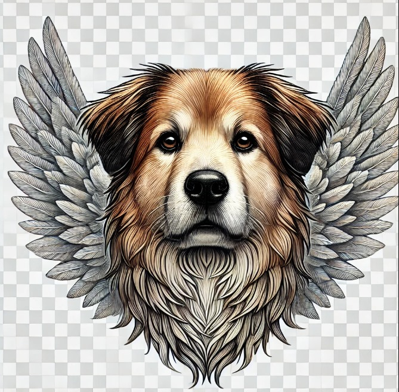

{#fragment id=navbar}

<nav class="navbar navbar-expand-lg navbar-dark bg-dark">
    <div class="container-fluid">

        <a class="navbar-brand" href="/" title="SOS Pet Alpha">
            
        </a>

        <button class="navbar-toggler ms-auto" type="button" data-bs-toggle="collapse" data-bs-target="#main-navigation"
                aria-controls="main-navigation" aria-expanded="false" aria-label="Toggle navigation">
            <span class="navbar-toggler-icon"></span>
        </button>

        <div class="collapse navbar-collapse" id="main-navigation">
            <ul class="navbar-nav me-auto mb-2 mb-lg-2">
                <li class="nav-item"><a class="nav-link" href="#1">Adoção responsável</a></li>
                <li class="nav-item"><a class="nav-link" href="#2">Resgate</a></li>
                <li class="nav-item"><a class="nav-link" href="#3">Contato</a></li>
            </ul>

            <form class="d-flex" action="#" method="get">
                <input class="form-control me-2" type="search" placeholder="Pesquisar..." aria-label="Search" name="s">
                <button class="btn btn-outline-light" type="submit">Pesquisar</button>
            </form>
        </div>
    </div>
</nav>

{/fragment}